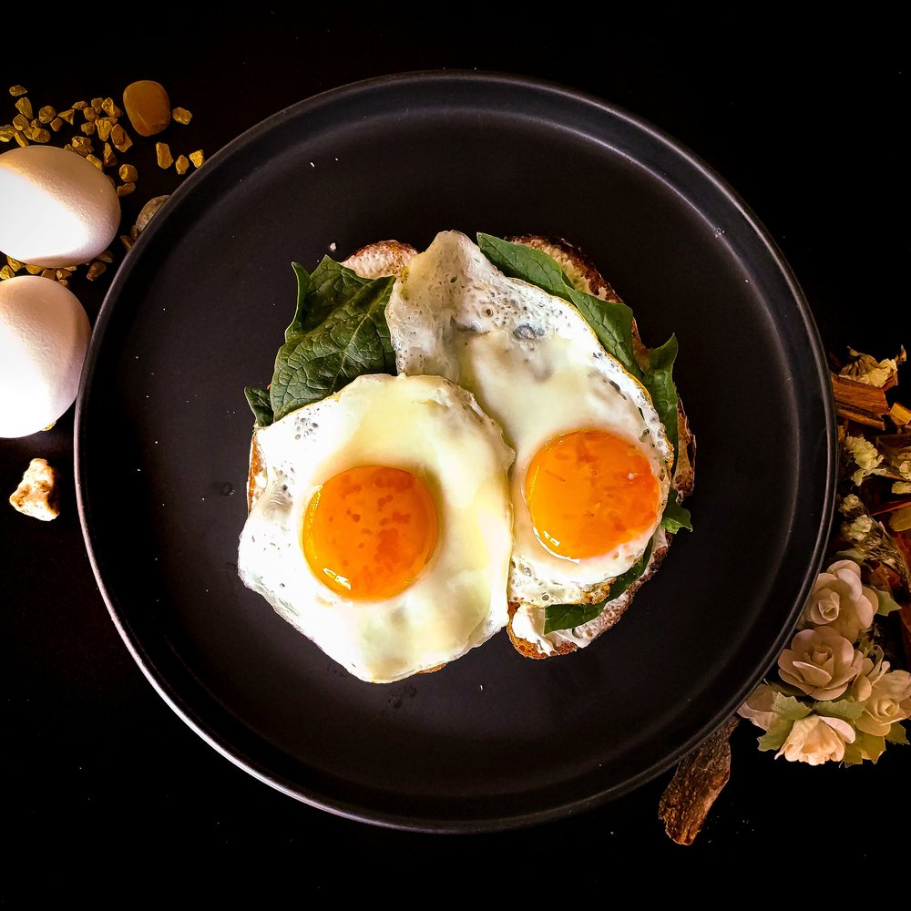

Fried Eggs
Fried eggs are so yummy and so quick to whip up. Learn how to make this deliciousness below!
Ingredients/Materials:
- An egg or two (or however many your heart desires).
- Oil, cooking spray, butter, or anything else that's nonstick.
- Salt and/or other seasonings.
- A pan.
- A spatula.
Instructions:
- Turn your stove to high heat.
- Put your pan on the stove and heat your nonstick agent of choice until it starts to sizzle.
- Crack the egg (or eggs) into the pan and add your salt and/or seasoning. Wait until the bottom is golden brown. Check this by placing your spatula under the egg. If you can lift the whole egg without any trouble (no sticking), then your egg is ready to be flipped.
- Turn your stove off, then flip the egg onto the other side. Do the same spatula test to check if it's ready.
- Once both sides are golden brown, they are ready to serve! You can eat it on its own or with some bread, bagels, or other breakfast items.

Image Description: Golden brown sunny side ups, fried to perfection.